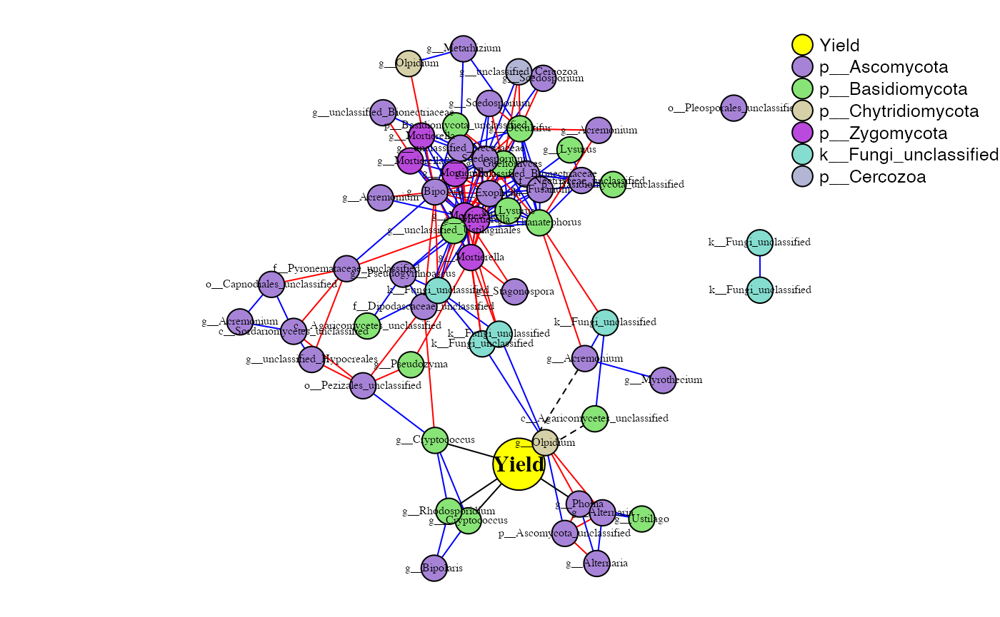
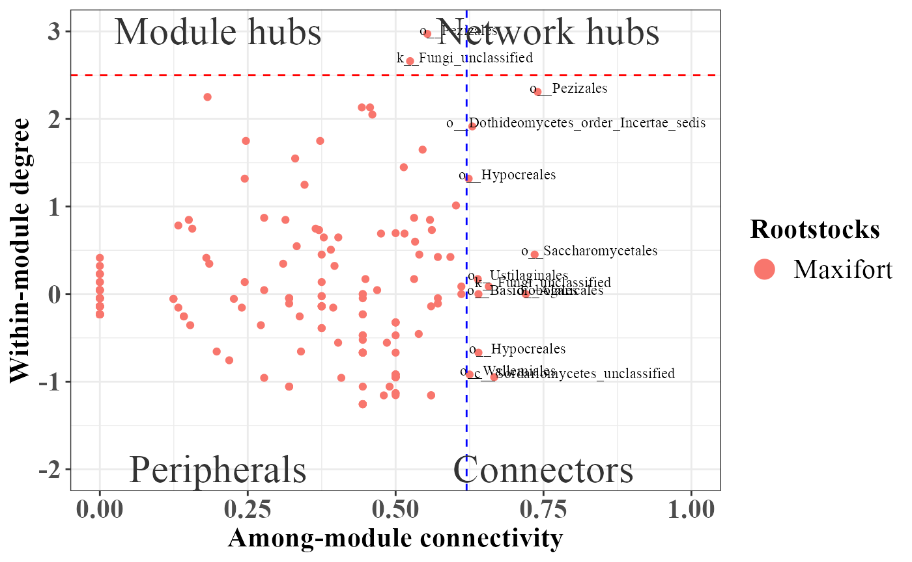
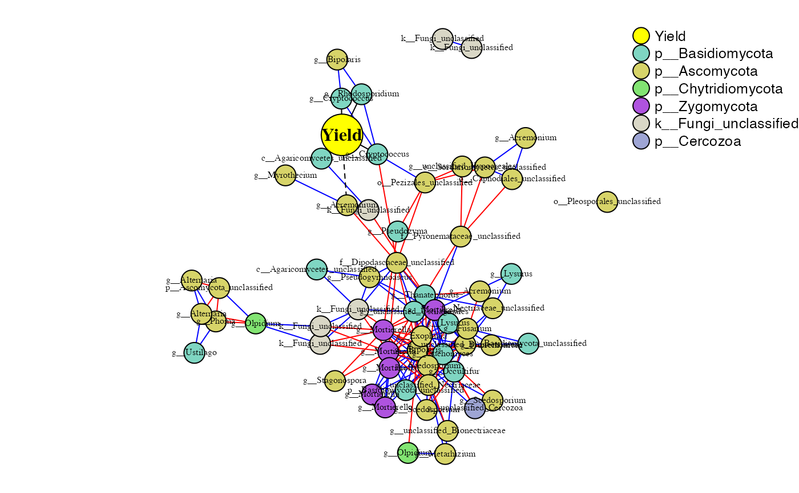
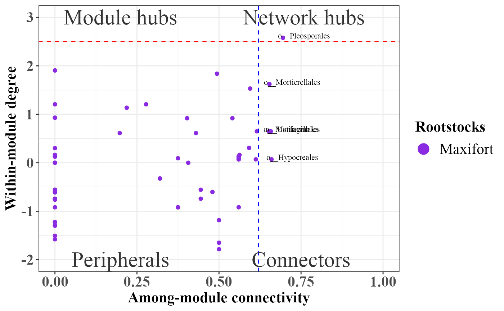

PhONA.RmdPhONA provides a framework to select a testable and manageable number of OTUs to support microbiome-based agriculture.
# installation
# library(devtools)
# devtools::install_github("ravinpoudel/PhONA", build_vignettes = TRUE, force = TRUE, auth = "5c5decd148f0378dcb762e7b14c3d1508ef49ba2")
# Browse Vignettes to see the output as below.
# browseVignettes("PhONA")
###### Load the data
phyobj <- readRDS(system.file("extdata", "physeqobject.rds", package = "PhONA"))
sparcc.cor <- read.delim(system.file("extdata", "cor_sparcc.out", package = "PhONA"), sep = "\t", header = T, row.names = 1)
sparcc.pval <- read.delim(system.file("extdata", "pvals.txt", package = "PhONA"), sep = "\t", header = T, row.names = 1)
## Assign color to the taxa on the whole phyloseq object so that the same color is assigned for a taxon across treatments
phyobj = taxacolor(phyobj = phyobj, coloredby = "Phylum")
example_lm <- PhONA(
physeqobj = phyobj,
cordata = sparcc.cor,
pdata = sparcc.pval,
model = "lm",
iters=1,
OTU_OTU_pvalue = 0.05,
OTU_OTU_rvalue = 0.5,
OTU_Phenotype_pvalue = 0.6,
definePhenotype = "Marketable",
defineTreatment = "Maxifort",
PhenoNodecolor = "yellow",
PhenoNodesize = 20,
PhenoNodelabel = "Yield",
nodesize = 10,
Pheno2OTUedgecolor = "black",
netlayout = layout.fruchterman.reingold
)## Total number of iterations used: 1
Summary of the graph
kable(summarizePhONA(example_lm$phona_graph, example_lm$roles))| node | edge | nodeDegree | avgpath | trans | mod | connectance | wtc | nModules.SA | top3hub | top3hubv | n_postiveL | n_negativeL |
|---|---|---|---|---|---|---|---|---|---|---|---|---|
| 235 | 1019 | 4.336 | 1.963 | 0.773 | 0.314 | 0.018 | 30 | 6 | 1;17;36 | 1;0.578;0.56 | 496 | 289 |
Role analyses using SA algorithm implemented in rnetcarto package.
rolePlot(example_lm)
library(PhONA)
example_lasso <- PhONA(
physeqobj = phyobj,
cordata = sparcc.cor,
pdata = sparcc.pval,
model = "lasso",
iters=2,
OTU_OTU_pvalue = 0.001,
OTU_OTU_rvalue = 0.6,
OTU_Phenotype_pvalue = 0.6,
definePhenotype = "Marketable",
defineTreatment = "Maxifort",
PhenoNodecolor = "yellow",
PhenoNodesize = 20,
PhenoNodelabel = "Yield",
nodesize = 10,
Pheno2OTUedgecolor = "black",
netlayout = layout.fruchterman.reingold
)## Total number of iterations used: 2
Summary of the graph
kable(summarizePhONA(example_lasso$phona_graph, example_lasso$roles))| node | edge | nodeDegree | avgpath | trans | mod | connectance | wtc | nModules.SA | top3hub | top3hubv | n_postiveL | n_negativeL |
|---|---|---|---|---|---|---|---|---|---|---|---|---|
| 61 | 181 | 2.967 | 3.108 | 0.601 | 0.364 | 0.049 | 8 | 7 | 38;23;24 | 1;0.932;0.897 | 107 | 69 |
rolePlot(example_lasso)
Classification of nodes into roles is based on the pattern of intra-inter module connections of a node in the complex graph. Nodes with similar roles are expected to have similar relative within-module connectivity.Within-module degree is standardized z score value where the number of links of a node within its module is averaged over all the links within a module. Note, Within-module degree value only counts the number of links i.e. the presene or absecne of links, and links weight are not considered. The within-module degree z-score measures how well-connected node i is to other nodes in the module.
Where as the Participation Coefficient measures how well a node of a module is connected with other nodes in other modules.In other word, it measures how ‘well-distributed’ the links of node i are among different modules. Two nodes with same within-module degree might have totally different participations with other modules. Thus, Participation Coefficient measures out of total number of links of a node, how many are associated with other modules. The participation coefficient of a node is therefore close to 1 if its links are uniformly distributed among all the modules and 0 if all its links are within its own module.
Values were defined heuristically, with some validation from biological data. But such division is subject to open discussion. Can be found on the supplemental discussion of the main paper.
Very high or a very low (negative) Z scores, associated with very small p-values, are found in the tails of the normal distribution. When you perform a feature pattern analysis and it yields small p-values and either a very high or a very low (negative) Z score, this indicates it is very UNLIKELY that the observed pattern is some version of the theoretical spatial random pattern represented by your null hypothesis.
The critical Z score values when using a 95% confidence level are -1.96 and +1.96 standard deviations. The p-value associated with a 95% confidence level is 0.05. If your Z score is between -1.96 and +1.96, your p-value will be larger than 0.05, and you cannot reject your null hypothsis; the pattern exhibited is a pattern that could very likely be one version of a random pattern. If the Z score falls outside that range (for example -2.5 or +5.4), the pattern exhibited is probably too unusual to be just another version of random chance and the p-value will be small to reflect this. In this case, it is possible to reject the null hypothesis and proceed with figuring out what might be causing the statistically significant spatial pattern.
When the absolute value of the Z score is large (in the tails of the normal distribution) and the probabilities are small, you are seeing something unusual and generally very interesting.